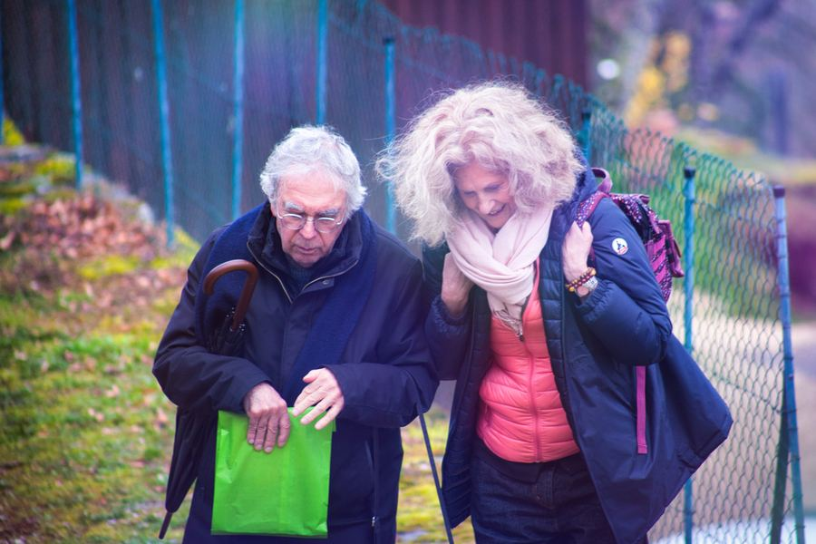

Cécile Dupart & Guy Pelletier — Montchardon, mars 2026
Cécile Dupart porte et coordonne les actions Live to Love au sein de Drukpa Grenoble.
L'idée est simple et profonde : accomplir des actions particulièrement altruistes, en groupes ou individuellement, et les partager pour encourager chacun à agir.
Des week-ends bimestriels sont prévus tout au long de l'année. Chaque participant est invité à mettre en route des actions altruistes ou à partager celles qu'il fait déjà, via photos ou court texte, publiés par l'association internationale Live to Love fondée par Sa Sainteté le Gyalwang Drukpa.